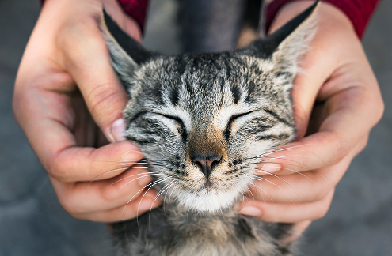
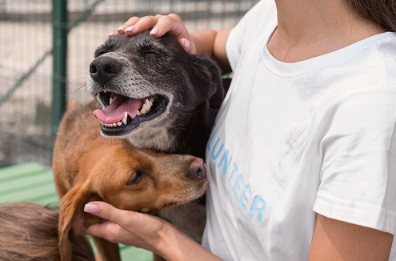

Взять питомца домой
Одна из главных целей проекта – помочь как можно большему числу животных обрести дом. Приняв в свою семью одного из наших питомцев, вы подарите ему шанс на новую счастливую жизнь.
Выбрать питомца
Финансово
Вся деятельность приютов осуществляется на частные пожертвования. Мы будем благодарны вам за любую поддержку и помощь, без которой приютам просто не выжить.

Стать волонтером
Волонтерская деятельность включает в себя уход за питомцами, помощь на мероприятиях и фестивалях, а также участие в организации повседневной работы приюта.
Стать волонтером можно, выбрав на сайте один из приютов и связавшись с ним с помощью одного из представленных на сайте способов.
Перейти к приютам
Лекарства и необходимые вещи
Приюты всегда нуждаются в медикаментах, питании, в средствах для жизни и ухода, а также в других предметах других предметах первой необходимости. Такие пожертвования помогают улучшать качество жизни животных и заботиться о них каждый день.
Информационно
Распространение информации о приютах и их подопечных через социальные сети поможет увеличить шансы животных найти свой дом.
Поддержать наш сайт
Для того чтобы наше сообщество продолжало развиваться и объединять людей, заботящихся о животных, нам необходима ваша поддержка. Вы можете внести свой вклад в работу нашей платформы, сделав донат. Эти средства будут направлены на:
- поддержание работы сайта;
- обновление и расширение базы данных;
- разработку новых функций для улучшения взаимодействия с пользователями.